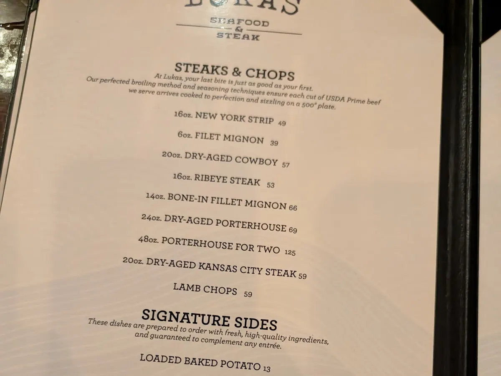
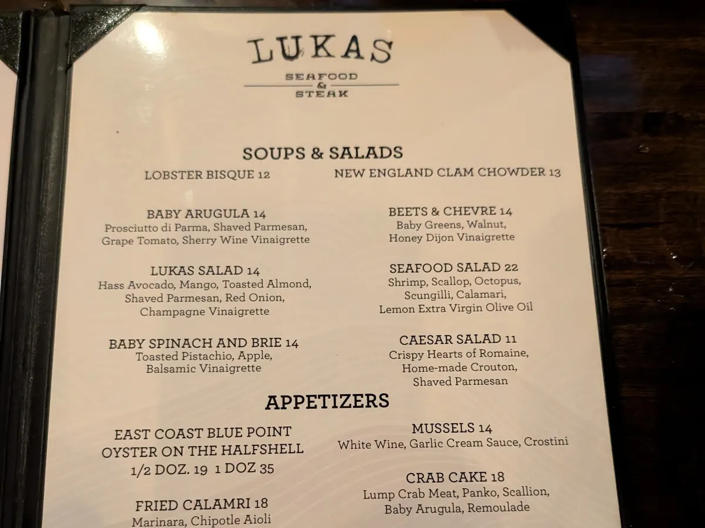
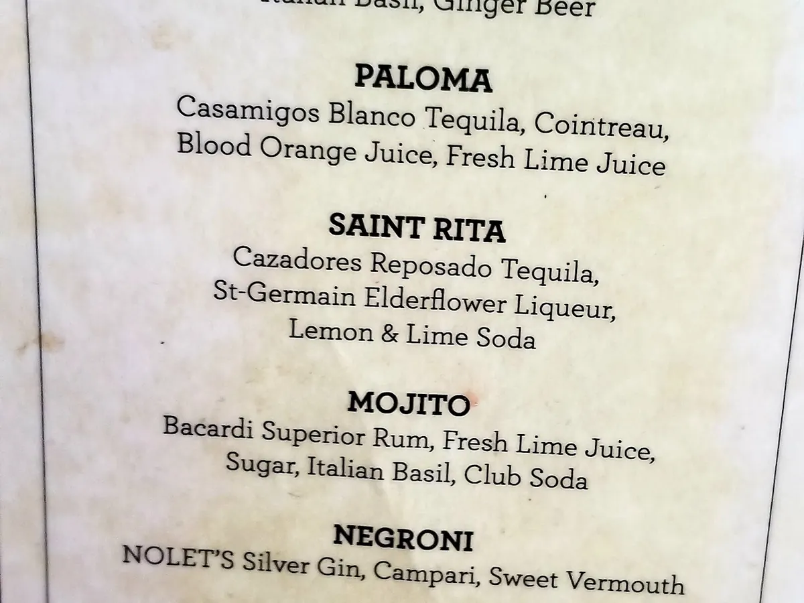
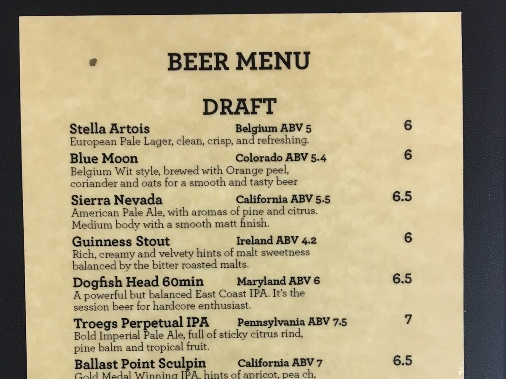
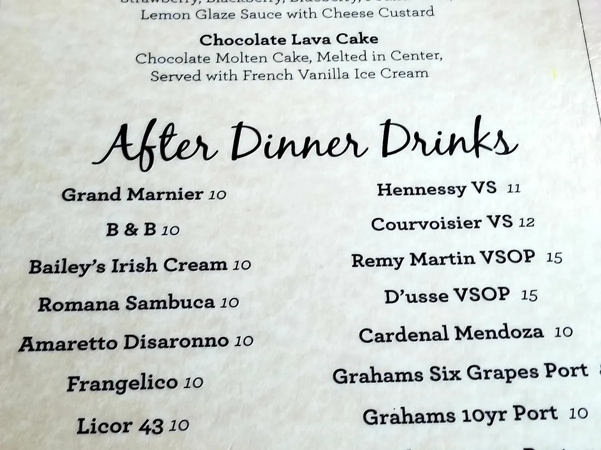
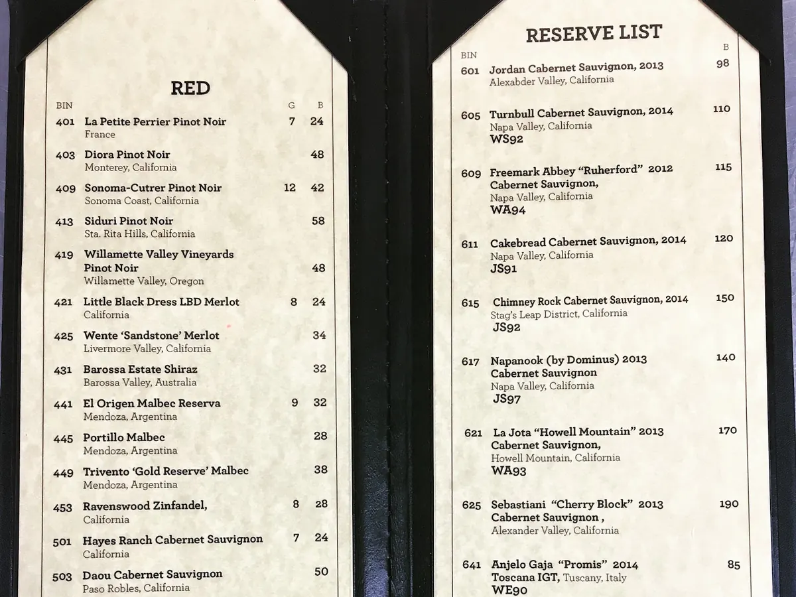

Lukas’ Seafood · Steak · Bar
The menus.
Everything is printed the same way it is served — a la carte, plus a three-course prix fixe Sunday through Thursday.

The printed menus
Straight from the binder at 61C Mountain Blvd.









Ready when you are
Save a seat.
Lukas’ is at 61C Mountain Blvd in Warren’s Town Center. Reservations are recommended, especially for weekends and the private room.